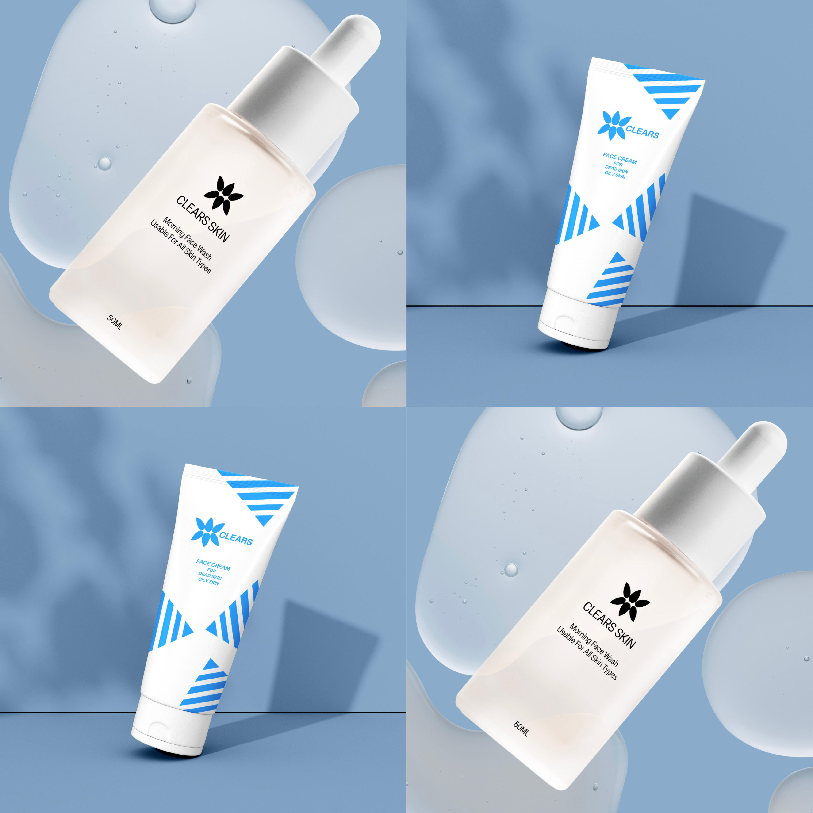

<!DOCTYPE html>
<html lang="en">
<head>
    <meta charset="UTF-8">
    <meta name="viewport" content="width=device-width, initial-scale=1.0">
    <meta name="description" content="Matalame's website for Interactive Media WSOA3028A">
    <meta name="author" content="Matalame Mamabolo">
    <meta name="keywords" content="Graphic Design, Interior Design, Design, Portfolio">
    <meta property="og:title" content="Matalame Mamabolo: Portfolio">
    <meta property="og:description" content="The digital life and work of Matalame Mamabolo.">
    <meta property="og:type" content="First website">
    <title>Graphic Design</title>
    
    <script type="module">
        import { initialise } from "../Scripts/menu.js";
        initialise("Portfolio");
    </script>

    <link rel = "stylesheet" href = "../Styles/navigationBar.css">
    <link rel = "stylesheet" href = "../Styles/graphicDesign.css">

</head>
<body>
    <header>
        
        <nav>

        </nav>
    </header>

    <!-- <div class = "textwrap">
        
        <div class = "text-box">
            <h2> Interior Design 1</h2>
            <p> This CSS will style the "Visit Page" button with a background color, padding, border radius, and transition effect for 
            hover. You can adjust the colors and other properties to fit your design preferences. you give the navigation bar a visible 
            border. You can adjust the border width, style, and color as needed to match your design preferences. If you want the border
            on the nav element instead, apply the border property to nav in your CSS</p>
        </div>
    </div> -->
    
</body>
</html>
